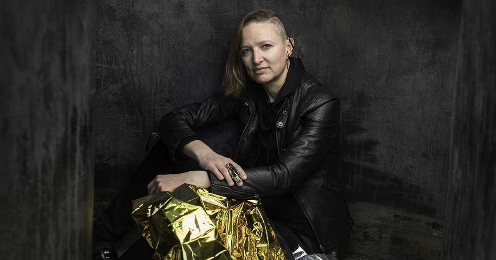

People Principal Investigator  Dr. Carolin Frueh PhD Students Alex Burton Nathan Houtz Arly Black Surabhi Bhadauria Daigo Kobayashi Juan Gutierrez Masashi Nishiguchi Master’s Students Liam Robinson BSAAE 2022 Abdulrahman ‘Beedo’ Abdrabou BSAAE 2023 Dan Curren